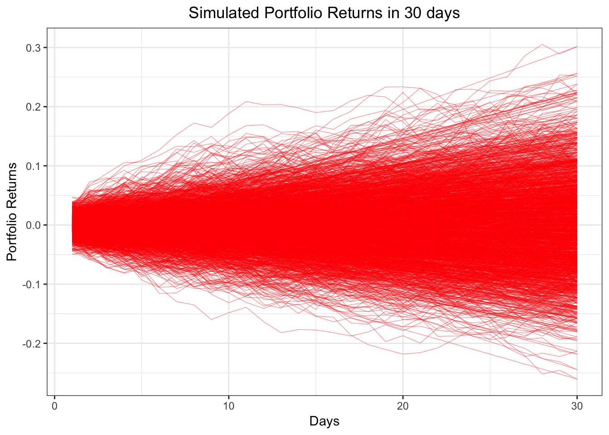
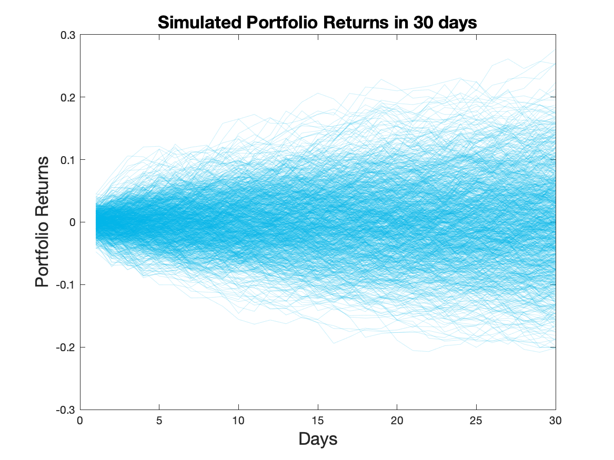
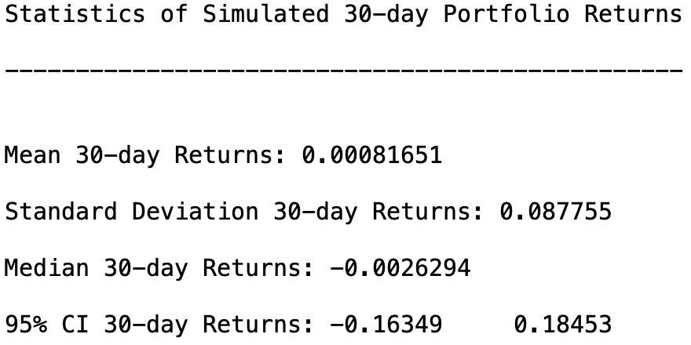
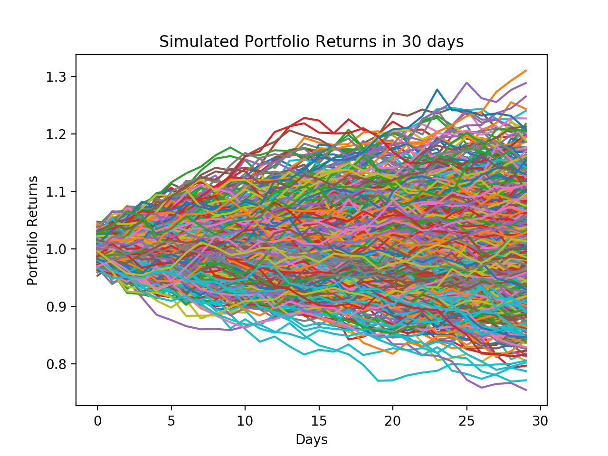
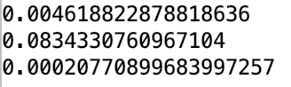
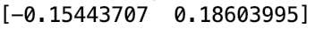

2 Monte Carlo Simulation of Stock Portfolio in R, Matlab, and Python
2.1 Monte Carlo Introduction
The purpose of this tutorial is to demonstrate Monte Carlo Simulation in Matlab, R, and Python. We conduct our Monte Carlo study in the context of simulating daily returns for an investment portfolio.
For simplicity we will only consider three assets: Apple, Google, and Facebook. We will assume an Initial Investment of $100,000 and allocate our money evenly between the three stocks. In this case the portfolio weights \(w_i = 1/3\) for \(i = 1,2,3\).
Next, we assume that daily returns are distributed Multivariate Normal with mean vector \(\mu\) and covariance matrix \(\Sigma\). In other words, \[R_t \sim MVN(\mu, \Sigma)\] for \(t \in \{1,\dots,T\}\) where \(T\) is the final time horizon.
We will use the Cholesky Factorization in order to find Lower Triangular Matrix \(L\) such that \(LL' = \Sigma\). Then our returns can be generated by \[ R_t = \mu + LZ_t \] where \[Z_t \sim N(0,I)\] for \(t \in \{1,\dots,T\}\).
The returns will be simulated over a 30-day period, where our 30-day returns can be formulated as, \[\hat R_{30} = \prod_{t=1}^{30} (1+R_t)\]
Thus our portfolio returns for each Monte Carlo trial \(m\) become the inner product between the 30-day returns and our vector of portfolio weights \(w\), \[P_m = w \cdot \hat R_{30} \].
2.2 Dataset Summary
We use adjusted-close stock prices for Apple, Google, and Facebook from November 14th, 2017 - November 14th, 2018. Historical stock price data can be found on Yahoo Finance for these companies. Also here is the link to the data set for this tutorial ‘Stock Price Data’.
The first ten rows of data look like :
## Date AAPL_Adj_Close GOOG_Adj_Close FB_Adj_Close
## 1: 11/15/17 166.5791 1020.91 177.95
## 2: 11/16/17 168.5693 1032.50 179.59
## 3: 11/17/17 167.6333 1019.09 179.00
## 4: 11/20/17 167.4658 1018.38 178.74
## 5: 11/21/17 170.5791 1034.49 181.86
## 6: 11/22/17 172.3721 1035.96 180.87
## 7: 11/24/17 172.3820 1040.61 182.78
## 8: 11/27/17 171.5150 1054.21 183.03
## 9: 11/28/17 170.5101 1047.41 182.42
## 10: 11/29/17 166.9732 1021.66 175.132.3 Languages
2.3.1 R
Firstly, we need to load the data
stock_Data = fread('./Stats506/Group21_ProjectData.csv')Then we extract the stock price and set initial values for Monte-Carlo parameters
stock_Price = as.matrix( stock_Data[ , 2:4] )
mc_rep = 1000 # Number of Monte Carlo Simulations
training_days = 30 Get the returns by stock price and set the investment weights
# This function returns the first differences of a t x q matrix of data
returns = function(Y){
len = nrow(Y)
yDif = Y[2:len, ] / Y[1:len-1, ] - 1
}
# Get the Stock Returns
stock_Returns = returns(stock_Price)
# Suppose we invest our money evenly among all three assets
# We use today's Price 11/14/2018 to find the number of shares each stock
# that we buy
portfolio_Weights = t(as.matrix(rep(1/ncol(stock_Returns), ncol(stock_Returns))))
print(portfolio_Weights)## [,1] [,2] [,3]
## [1,] 0.3333333 0.3333333 0.3333333Calculate the Covariance matrix and Mean value of Stock Returns
# Get the Variance Covariance Matrix of Stock Returns
coVarMat = cov(stock_Returns)
miu = colMeans(stock_Returns)
# Extend the vector to a matrix
Miu = matrix(rep(miu, training_days), nrow = 3)Use Monte-Carlo to simulate the 30-day Portfolio Returns
# Initializing simulated 30 day portfolio returns
portfolio_Returns_30_m = matrix(0, training_days, mc_rep)
set.seed(200)
for (i in 1:mc_rep) {
Z = matrix ( rnorm( dim(stock_Returns)[2] * training_days ), ncol = training_days )
# Lower Triangular Matrix from our Choleski Factorization
L = t( chol(coVarMat) )
# Calculate stock returns for each day
daily_Returns = Miu + L %*% Z
# Calculate portfolio returns for 30 days
portfolio_Returns_30 = cumprod( portfolio_Weights %*% daily_Returns + 1 )
# Add it to the monte-carlo matrix
portfolio_Returns_30_m[,i] = portfolio_Returns_30;
}Visualising the result ( Simulated Portfolio Returns in 30 days)
# Visualising result
x_axis = rep(1:training_days, mc_rep)
y_axis = as.vector(portfolio_Returns_30_m-1)
plot_data = data.frame(x_axis, y_axis)
ggplot(data = plot_data, aes(x = x_axis, y = y_axis)) + geom_path(col = 'red', size = 0.1) +
xlab('Days') + ylab('Portfolio Returns') +
ggtitle('Simulated Portfolio Returns in 30 days')+
theme_bw() +
theme(plot.title = element_text(hjust = 0.5))
Get some useful statistics through the results we get
# Porfolio Returns statistics on the 30th day.
Avg_Portfolio_Returns = mean(portfolio_Returns_30_m[30,]-1)
SD_Portfolio_Returns = sd(portfolio_Returns_30_m[30,]-1)
Median_Portfolio_Returns = median(portfolio_Returns_30_m[30,]-1)
print(c(Avg_Portfolio_Returns,SD_Portfolio_Returns,Median_Portfolio_Returns))## [1] 0.0009402469 0.0840585273 -0.0015423606# Construct a 95% Confidential Interval for average returns
Avg_CI = quantile(portfolio_Returns_30_m[30,]-1, c(0.025, 0.975))
print(Avg_CI)## 2.5% 97.5%
## -0.1541318 0.17027112.3.2 Matlab
Load data and extract stock price
stockData = readtable('./Stats506/Group21_ProjectData.csv');
stockPrices = table2array(stockData(:, 2:end));Set Monte_Carlo parameters
mc_rep = 1000;
initInvestment = 100000;
numTradingDays = 30Calculate stock returns
stock_returns = stock_price(2:end, :) ./ stock_price(1:end-1, :) - 1;Set portfolio weight
portfolioWeights = (1/3) * ones(1, size(stockPrices,2));Calculate covariance matrix and mean of the stock returns
% Get the Variance Covariance Matrix of our Stock Returns
coVarMat = cov(stockReturns);
% Average returns of each asset
mu = transpose(mean(stockReturns));
mu = repmat(mu, 1, numTradingDays);Then we use Monte-Carlo to simulate the portfolio returns in 30 days
for i = 1:mc_rep
% 'Randomly generated numbers from N(0,1) distribution'
Z = randn(size(stockReturns,2), numTradingDays);
% 'Lower Triangular Matrix from Choleski Factorization'
L = chol(coVarMat, 'lower');
% 'Calculate daily returns for 30 days'
dailyReturns = mu + (L * Z);
% 'Portfolio Returns'
thirtyDayReturn = transpose(cumprod(portfolioWeights * dailyReturns + 1));
% 'Add return to the set of all 30-day portfolio returns'
portfolio30DayReturn_m(:,i) = thirtyDayReturn;
endVisualizing the result
plot(portfolio30DayReturn_m - 1, 'LineWidth', 0.5, 'Color', [0,0.7,0.9, 0.2])
title('Simulated Portfolio Returns in 30 days', 'fontsize', 16)
xlabel('Days','fontsize',16)
ylabel('Portfolio Returns','fontsize',16) Finally, we want to get some useful statistics:
% Calculate some statistics for our simulated portfolio returns
averagePortfolioReturns = mean(portfolio30DayReturn_m(end,:) - 1);
stdDevPortfolioReturns = std(portfolio30DayReturn_m(end,:) - 1);
medianPortfolioReturns = median(portfolio30DayReturn_m(end,:) - 1);
% Construct a 95% Confidential Interval for average returns
average_CI = quantile(portfolio30DayReturn_m(end,:) - 1, [0.025, 0.975]);
2.3.3 Python
Load modules
import pandas as pd
import numpy as np
import matplotlib.pyplot as pltLoad data and extract stock price
stock_data = pd.read_csv("./Stats506/Group21_ProjectData.csv")
stock_price = stock_data.iloc[:,1:4]
stock_price = stock_price.valuesSet Monte_Carlo parameters
mc_rep = 1000
train_days = 30Calculate stock returns
nrows = len(stock_price)
stock_returns = stock_price[1:nrows,:] / stock_price[0:nrows-1,:] - 1Set portfolio weight
portf_WT = np.array([1/3, 1/3, 1/3])Calculate covariance matrix and mean of the stock returns
cov = np.cov(np.transpose(stock_returns))
miu = np.mean(stock_returns, axis=0)
Miu = np.full((train_days,3),miu)
Miu = np.transpose(Miu)Then we use Monte-Carlo to simulate the portfolio returns in 30 days
# initial matrix
portf_returns_30_m = np.full((train_days,mc_rep),0.)
np.random.seed(100)
for i in range(0,mc_rep):
Z = np.random.normal(size=3*train_days)
Z = Z.reshape((3,train_days))
L = np.linalg.cholesky(cov)
daily_returns = Miu + np.inner(L,np.transpose(Z))
portf_Returns_30 = np.cumprod(np.inner(portf_WT,np.transpose(daily_returns)) + 1)
portf_returns_30_m[:,i] = portf_Returns_30Visualizing the result
plt.plot(portf_returns_30_m)
plt.ylabel('Portfolio Returns')
plt.xlabel('Days')
plt.title('Simulated Portfolio Returns in 30 days')
plt.show() Finally, we want to get some useful statistics:
# Porfolio Returns statistics on the 30th day
Avg_portf_returns = np.mean(portf_returns_30_m[29,:]-1)
SD_portf_returns = np.std(portf_returns_30_m[29,:]-1)
Median_portf_returns = np.median(portf_returns_30_m[29,:]-1)
print(Avg_portf_returns)
print(SD_portf_returns)
print(Median_portf_returns)
# construct CI for average
Avg_CI = np.quantile(portf_returns_30_m[29,:]-1,np.array([0.025,0.975]))
print(Avg_CI)
2.4 Results
For our particular example, the portfolio returns averaged over all monte carlo trials had an average close to 0. The reason the average is close to 0 is because Apple, Facebook, and Google have average returns close to 0 over the past year. Therefore, our simulated returns essentially had no drift. Also, assuming a normal distribution of the returns would not work well in practice since stock returns are typically fat-tailed and not normally distributed. However, based on our Monte Carlo Study, we do not suggest investing in this portfolio based on the low expected portfolio returns.
2.5 Note
Statistics we get using three different languages are slightly different, because in our simulation process, we have generated random numbers and these numbers cannot be exactly identical.
2.6 Reference
Yahoo Finance